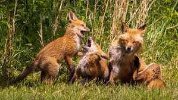

|  | The bat-eared fox is another Kenyan animal that belongs to the dog family. Its large ears are its defining characteristic. It also feeds on insects like termites, lives alone or in small groups, and has six more teeth than other foxes. The bat-eared fox can be found in savannahs, arid scrublands, and grassy plains. |